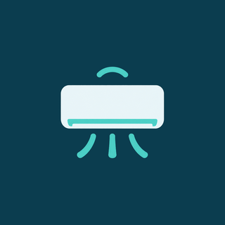

Gree Local
Privacy policy · 2 September 2026
Gree Local collects nothing, sends nothing, and has no servers.
What the app stores
Everything the app knows stays on your phone, in its private app storage:
- the network address, MAC address and display name of each air conditioner you add
- the encryption key the air conditioner itself issues when the app pairs with it
- the last known state of each unit (target temperature, mode, fan, room temperature), so the home screen widget can draw without waiting for the unit to answer
Uninstalling the app deletes all of it. Nothing is uploaded anywhere.
What the app sends over the network
The app talks only to your air conditioners, directly, on your own local network,
using the manufacturer's UDP protocol on port 7000. To find units it
sends a discovery probe to addresses on the network your phone is connected to.
There is no analytics, no crash reporting, no advertising, and no third-party SDK of any kind. The app never contacts a server operated by the developer, by Gree, or by anyone else. It works with the internet disconnected.
Permissions
INTERNETandACCESS_NETWORK_STATEare needed to open a local socket and to read which network the phone is on, so the app knows which addresses to probe.ACCESS_WIFI_STATEandCHANGE_WIFI_MULTICAST_STATEare needed to reach units that answer only broadcast discovery.
None of these are used to collect information about you.
Children
The app is a remote control for an appliance. It is not directed at children and collects no personal information from anyone.
Contact
Questions or issues: github.com/trongio/gree-local/issues